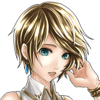

パリス
な、きゅ、急にどうしたの？
セリア
うーん、なんかいつもと違うと 思ったんだけど気のせい？
セリア
そう、私はてっきりアム＝ユノスに言われ たことを気にしてるのかと思ったんだけど。
パリス
ええ、セリアの言う通り。 アム＝ユノスの言葉が引っかかっているの。
パリス
「また君は流されていやしないかい？」 っていうあの言葉がね……。
セリア
で、実際どうなの？ パリスは流されているの？
パリス
いえ、私は自分で決めた意志で 動いているわ。
パリス
召喚院に入ったのもそうだし、ティリス様を 助けるためにこの地に来たのもね。
パリス
ええ、でもアム＝ユノスはあの中で 私だけに覚悟が足りないと言った。
パリス
あなたたちに比べて自分に何かが足りないと 感じたのも確かなの。
不気味な声
敵地でくだらぬ話をダラダラと……。 やはり人間など取るに足らぬ存在だな。
竜型の魔神
私はこの地を治める魔神 “煌竜覇神バリュオン”様に仕える竜徒
リオメルグ
くだらぬ人間たちよ。 お前たちをこれより先に進ませはしない！